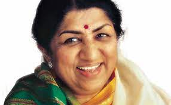

Lata Mangeshkar
Lata Mangeshkar was born in Indore on September 28, 1929, and became, quite simply, the most popular playback singer in Bollywood's history.
Shreya Ghoshal
She grew up in Rawatbhata, a small town near Kota, Rajasthan. Her father, Bishwajit Ghoshal is an electrical engineer and works for the Nuclear Power Corporation of India.

Udit Narayan
Udit was born on December 1, 1955 in Saptari district of Nepal. His father's name was Hare Kishna Jha and mother's name was Bhuvaneshwari Jha.